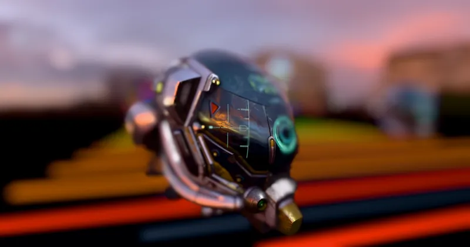

PostEffect > BuiltInEffect > Camera & Lens
Depth of Field (Auto Focus) - RedGPU WebGPU Example
Continuous Auto-Focus tracking subject distance via 9-Point Zone metering.
화면 중앙 9-Point Zone 피사체 거리를 감지해 초점을 자동 추적합니다.

PostEffect > BuiltInEffect > Camera & Lens
Continuous Auto-Focus tracking subject distance via 9-Point Zone metering.
화면 중앙 9-Point Zone 피사체 거리를 감지해 초점을 자동 추적합니다.
